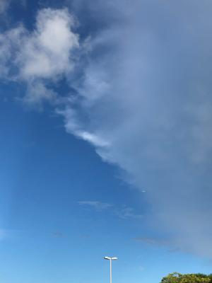
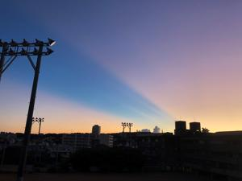
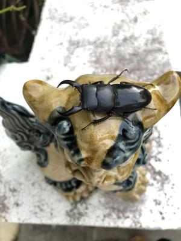
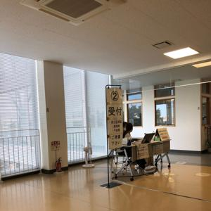

うるがいの話 ある日
最新: ４回目のワクチン【うるがいの話 ある日】とは 一日だけのプログです
『うるがいの話』の最新一日だけのプログで、通信料が少なく経済的だ。カニの画像をクリックすると全ての日付が載る『うるがいの話』サイトを表示します
|
|
【うるがいの話】 うるがい(ｳﾙｶﾞｲ urugai)とは、『もずくがに』の名前でとても大きくなります。 |
|---|---|
|
|
【カミマヤーの話】 猫のことを方言でマヤーといいます。カミマヤー（kamimayaa）とは、神の猫のことです。 |
|
【たながぁの音楽】 たながぁ（ﾀﾅｶﾞｰ tanagaa）とは手長えびのことで、何種類かあり大きいのは車 エビぐらいになります。 |

|
【ぶながぁの話】 ぶながぁ(ﾌﾞﾅｶﾞｰ bunagaa)とは、赤い髪の毛、赤い身体、そして身長は１ｍ２０ｃｍ ぐらい、川の蟹を食べているの目撃された。場所は沖縄県国頭郡大宜味村のと ある村僕の隣近所に住んでいる爺さんから、聞いた話です。 |
|
|
【ギーマの話】 ギーマ(giima)とは、山原の里山に咲くスズランに似た、 花を付けます。実は食べられます、 気が付くと口の周りが紫になっています。 |
2022年08月08日 (月）４回目のワクチン
16:51
   
４回目のワクチンを打つ。１０時が予定なのだが、３０分前に会場に入る。そ
れでも４番目、１０時４０分頃係の人が、待機の人達に説明があった、『ワク
チンを受けた後、１５分の待機中にトイレへ行く場合は、看護師が付き添いま
す、ええ、なぜかというとトイレに行って問題が起きたことがあったのです。
看護師も少ない人数なので、今のうちにトイレを済ましておいてください』と
アナウンスしていた。予定より少し早めに、始まり医師の問診を待っている間
に先着の２名がトイレにいったため、なぜか２番目になっていた。ぜんぜん痛
くない注射を終え、１５分の待機に入る。待機しているとき係のガッチリした
中年の女性に、『これまでに何か問題がありましたか？』と尋ねられたので、
２回目と３回目に熱が出ましたと答えると、なにかブツブツ喋りながら突然背
中をさするではありませんか、驚いて、あ！、もういいですと言う。その後あ
との人にも同じ事をしている。霊能力者のような・・・、不思議な人だった。
ヨメが風邪薬を買って来て言っていたので、ついでなので医療用抗原検査キッ
トを帰り道にある薬屋（販売をしているかは事前に調査済）で、入手すること
にした。風邪薬を選んだあと、店員に医療用抗原検査キットを買いたいのです
がと尋ねると、奥の薬局へ行ったくださいと言われる。ん！、え！、なんと処
方箋をもって薬をとる薬局だった。同じ建物内にある薬局へ入ると普通の薬局
で沢山の人がいた。窓口で、キットを買いたいのですが・・・・・、処方箋で
待っている人達と同じに扱いますので、しばらくお待ちくださいと、電話番号
をメモられた。車で、待つこと２０分以上、鼻と唾液の２種類をやっと入手。
ほうほう、大変だ。受取のときいろいろ、通常の薬局と同じく詳細な説明を受
ける（忘れそうだが）。帰るなり、冷蔵庫の野菜をいれるところに押し込む。
１６時４４分 ビットコインの総資産 ￥９、３０１↑